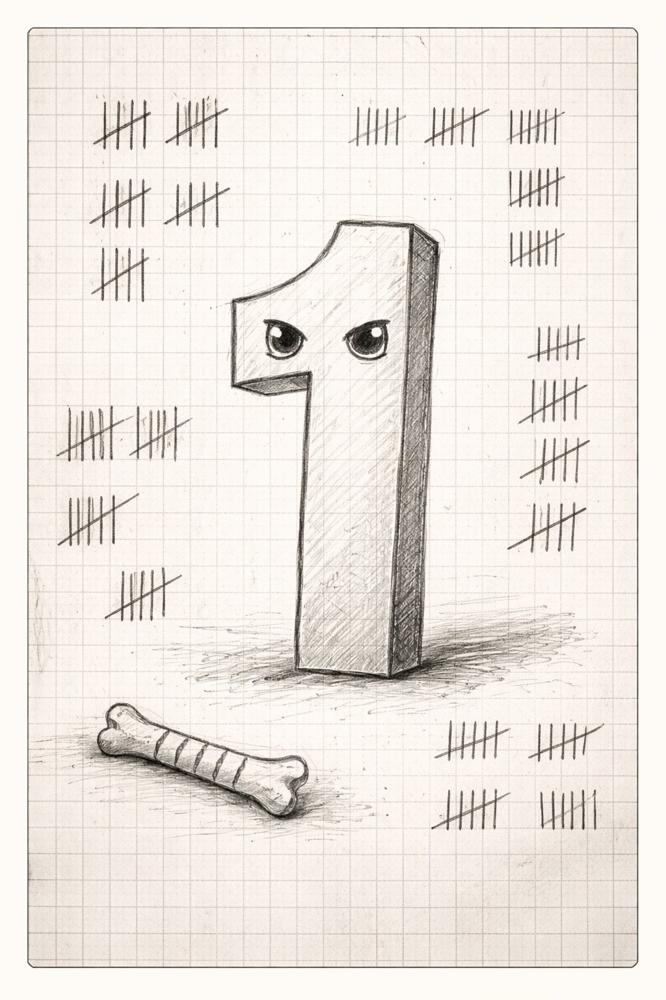
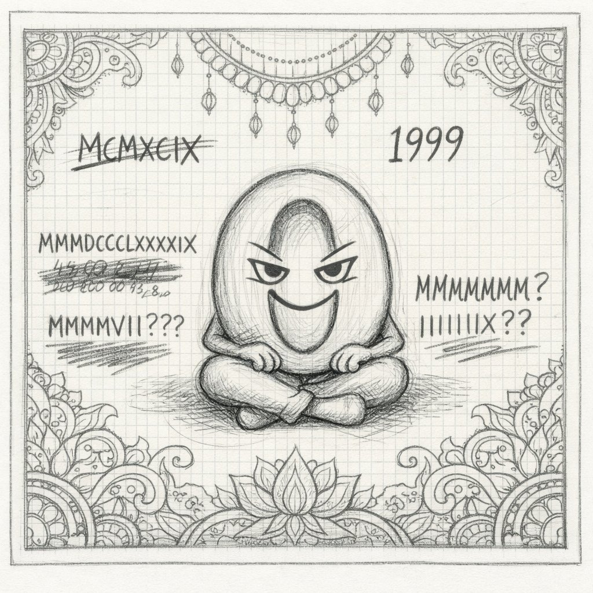
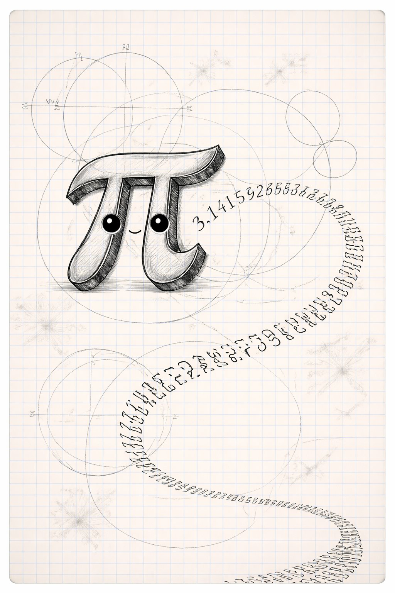
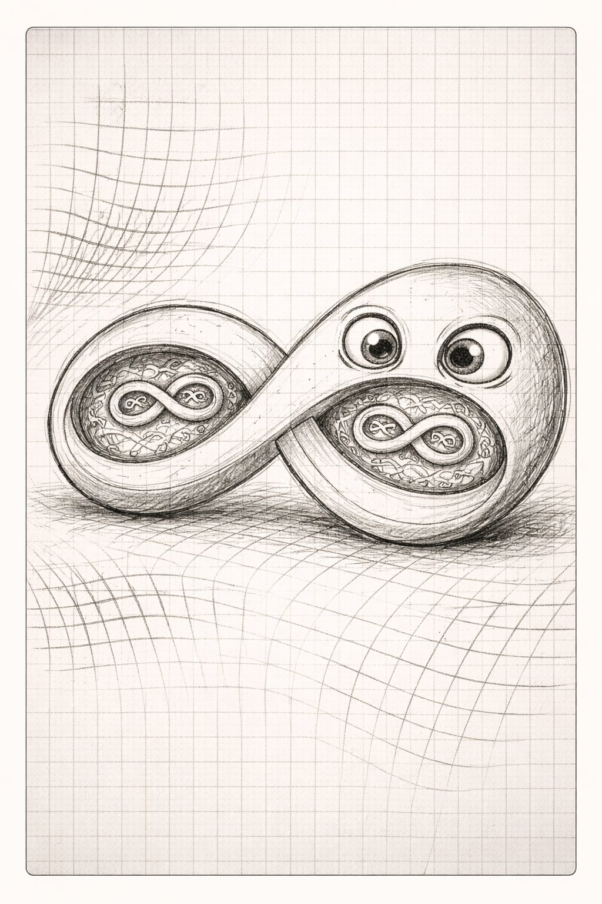
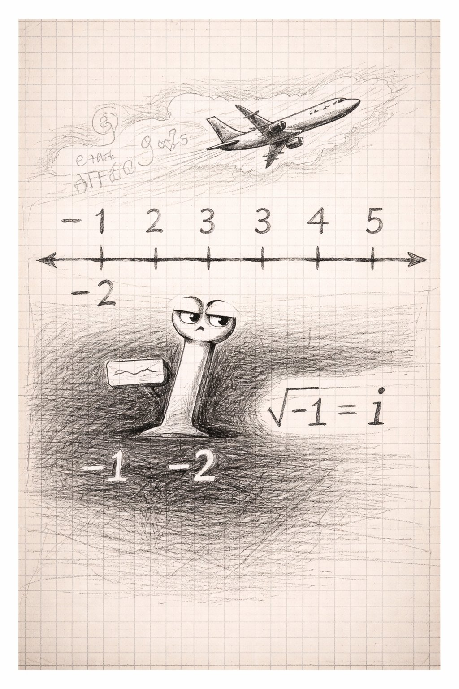

かずたちの じこしょうかい
— にんげんと数の 数万年史 —
1️⃣
0️⃣
🥧
♾️
➖

📚 じこしょうかいシリーズ 第13巻 ｜ シリーズ一覧
↓ スクロールして よんでね ↓
いち、に、さん。にんげんは かぞえることを おぼえた。
そこから すべてが はじまった。
かずは 自然の なかに あったのか？ にんげんが つくったのか？
……これは、数学者たちが いまも けんかしている もんだい。

イチは 1。かぞえることの はじまり。
骨に きざまれた 刻み目（イシャンゴの骨、約2万年前）が 最古の「数える」行為。
1がなければ 2もなく、2がなければ 数学はない。
すべての 数は 1の くりかえしで できている。

ゼロちゃんは 0（ゼロ）。7世紀のインドで ブラフマグプタが 定義した。
ゼロは「なにもない」ことを 表す 記号。
位取り記数法は ゼロがあって はじめて 可能。
コンピュータの 0と1も、ゼロちゃんが いるから 成り立つ。

パイさんは π（円周率）。約3.14159…で 永遠に つづく。
いまは コンピュータで 100兆桁以上 まで わかっている。
でも πは 円だけの 話じゃない。波、振り子、確率 ——
自然の いたるところに πが ひそんでいる。

ムゲンは ∞（無限）。かぞえても おわらない。
数学者カントールが 証明した：無限にも 大きさが ある。
自然数の 無限と 実数の 無限は ちがう サイズ。
「おわりがない」ものにも、階層が ある。

マイナ先輩は 負の数と虚数。「マイナス3個のリンゴ」は ない。
でも 借金の概念は マイナスから。
さらに 虚数 i（i² = -1）。存在しないはずの数が 電気回路、量子力学、航空工学を ささえている。
「存在しないもの」が 現実を 動かしている。
1️⃣に おそわったこと — 「はじまりは いつも いっぽ」。
0️⃣に おそわったこと — 「ないものを かんがえるのが にんげんの ちから」。
🥧に おそわったこと — 「おわらなくても、そこに いる」。
♾️に おそわったこと — 「おわりの ないものにも かたちが ある」。
➖に おそわったこと — 「ありえないものが せかいを うごかす」。
① 抽象 — 数は 手でさわれない。でも いちばん つよい 道具。
② 発見か発明か — 数は 宇宙に もとから あったのか？ まだ わからない。
③ 美 — 真理と美しさは、どこかで つながっている。